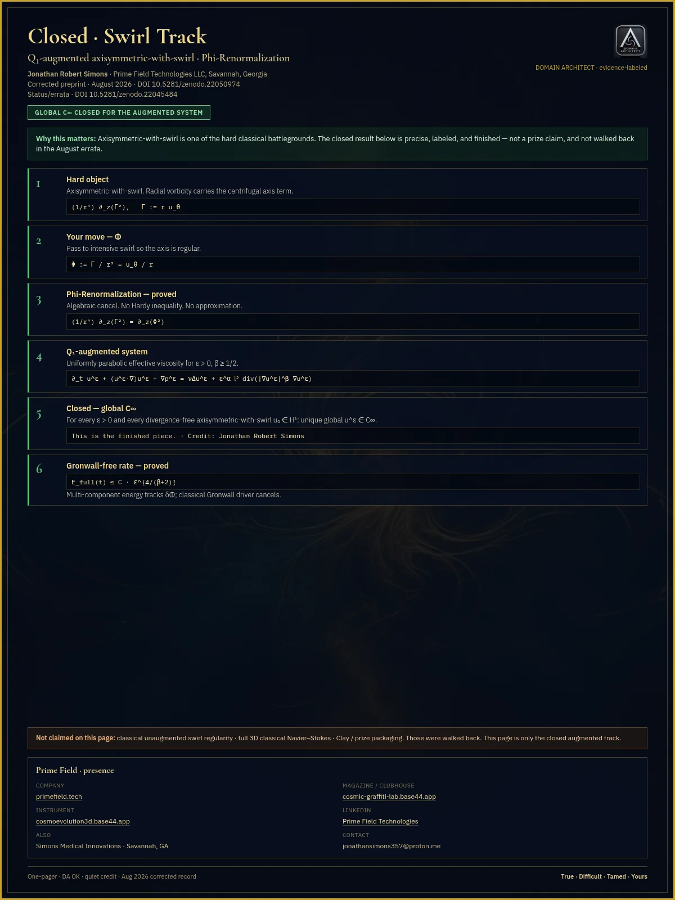

Inventory · labeled study · ~18 months
For the Record
For the record / not the last word.
Public surfaces credit wins and WITHDRAWN packaging. Classical open problems stay open where marked.

Quiet-credit lattice · Closed · Open · Conditional · WITHDRAWN
Status families
Closed
Closed · peer review pending
Labeled close on a specific statement — e.g. Q₁-augmented swirl (DOI 10.5281/zenodo.22050974).
Open
Open · In Progress
Tools and map; mountain not claimed — classical unaugmented NS (one remaining object Φ) · Route C (RH not claimed).
Conditional
Conditional / limited
Tools stand under hypothesis — Ring/SND · Bridge* limited · T2 shell flux.
Closed + Open · In Progress pair

Q₁-augmented swirl · DOI 10.5281/zenodo.22050974 · augmented only

Classical unaugmented · one remaining object Φ · mountain not claimed
WITHDRAWN examples (not magazine front): full-spectrum Bridge floor · Triple Lock · prize packaging · MD “resolved” theater · older superseded deposits.
See also: Open Progress Quiet credit · Zenodo · the Frequency Issue 1
For the record / not the last word.